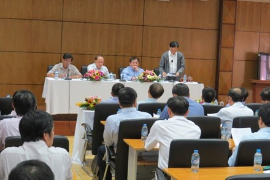

Thông tư số 03-2016-TT-BGDĐT về việc sửa đổi bổ sung một số điều của Quy chế tuyển sinh ĐH-CĐ hệ chính quy

Lần cập nhật cuối lúc Thứ tư, 06 Tháng 4 2016 10:26 Viết bởi Administrator Thứ tư, 23 Tháng 3 2016 14:03
THÔNG TƯ Về việc sửa đổi, bổ sung một số điều của Quy chế tuyển sinh đại học, cao đẳng hệ chính quy ban hành kèm theo Thông tư số 03/2015/TT-BGDĐT ngày 26 tháng 02 năm 2015 của Bộ trưởng Bộ Giáo dục và Đào tạo

Căn cứ Luật Giáo dục đại học ngày 18 tháng 6 năm 2012;
Căn cứ Nghị định số 36/2012/NĐ-CP ngày 18 tháng 4 năm 2012 của Chính phủ quy định chức năng, nhiệm vụ, quyền hạn và cơ cấu tổ chức của bộ, cơ quan ngang bộ;
Căn cứ Nghị định số 32/2008/NĐ-CP ngày 19 tháng 3 năm 2008 của Chính phủ quy định chức năng, nhiệm vụ, quyền hạn và cơ cấu tổ chức của Bộ Giáo dục và Đào tạo;
Căn cứ Nghị định số 75/2006/NĐ-CP ngày 02 tháng 8 năm 2006 của Chính phủ quy định chi tiết và hướng dẫn thi hành một số điều của Luật giáo dục; Nghị định số 31/2011/NĐ-CP ngày 11 tháng 5 năm 2011 của Chính phủ sửa đổi, bổ sung một số điều của Nghị định số 75/2006/NĐ-CP ngày 02 tháng 8 năm 2006 của Chính phủ quy định chi tiết và hướng dẫn thi hành một số điều của Luật giáo dục; Nghị định số 07/2013/NĐ-CP ngày 09 tháng 01 năm 2013 của Chính phủ sửa đổi điểm b khoản 13 Điều 1 của Nghị định số 31/2011/NĐ-CP ngày 11 tháng 5 năm 2011 của Chính phủ sửa đổi, bổ sung một số điều của Nghị định số 75/2006/NĐ-CP ngày 02 tháng 8 năm 2006 của Chính phủ quy định chi tiết và hướng dẫn thi hành một số điều của Luật giáo dục;
Thực hiện ý kiến chỉ đạo của Phó Thủ tướng Chính phủ Vũ Đức Đam tại Công văn số 743/VPCP-KGVX ngày 01 tháng 02 năm 2016 của Văn phòng Chính phủ về việc tổ chức thi tốt nghiệp trung học phổ thông và sử dụng kết quả để xét tuyển đại học, cao đẳng năm 2016 và công văn số 43157/VPCP-KGVX ngày 14 tháng 3 năm 2016 của Văn phòng Chính phủ về việc hướng dẫn công tác tuyển sinh hệ Cao đẳng;
Theo đề nghị của Cục trưởng Cục Khảo thí và Kiểm định chất lượng giáo dục,
Bộ trưởng Bộ Giáo dục và Đào tạo ban hành Thông tư sửa đổi, bổ sung một số điều của Quy chế tuyển sinh đại học, cao đẳng hệ chính quy ban hành kèm theo Thông tư số 03/2015/TT-BGDĐT ngày 26 tháng 02 năm 2015 của Bộ trưởng Bộ Giáo dục và Đào tạo.
Điều 1. Sửa đổi, bổ sung một số điều của Quy chế tuyển sinh đại học, cao đẳng hệ chính quy ban hành kèm theo Thông tư số 03/2015/TT-BGDĐT ngày 26 tháng 02 năm 2015 của Bộ trưởng Bộ Giáo dục và Đào tạo, như sau:
1. Điểm c khoản 2 Điều 2 được sửa đổi, bổ sung như sau:
"c) Các trường tổ chức tuyển sinh riêng có thể kết hợp xét tuyển những thí sinh đã dự thi kỳ thi THPT quốc gia có kết quả thi đáp ứng các tiêu chí đảm bảo chất lượng đầu vào do Bộ GDĐT quy định; trong trường hợp sử dụng đồng thời nhiều phương thức tuyển sinh cho một ngành hoặc nhóm ngành (sau đây gọi chung là ngành), các trường xác định và công bố công khai chỉ tiêu cho từng phương thức tuyển sinh.";
2. Gạch đầu dòng thứ nhất điểm a khoản 1 Điều 7 được sửa đổi, bổ sung như sau:
"- Đối tượng 01: Công dân Việt Nam là người dân tộc thiểu số có hộ khẩu thường trú (trong thời gian học THPT hoặc trung cấp) trên 18 tháng tại Khu vực 1 (KV1) quy định tại điểm c khoản 4 Điều 7 của Quy chế này.";
3. Điểm a khoản 4 Điều 7 được sửa đổi, bổ sung như sau:
"a) Thí sinh học liên tục và tốt nghiệp trung học tại khu vực nào thì hưởng ưu tiên theo khu vực đó. Nếu trong 3 năm học trung học phổ thông (hoặc trong thời gian học trung cấp) có chuyển trường thì thời gian học ở khu vực nào lâu hơn được hưởng ưu tiên theo khu vực đó. Nếu mỗi năm học một trường thuộc các khu vực có mức ưu tiên khác nhau hoặc nửa thời gian học ở trường này, nửa thời gian học ở trường kia thì tốt nghiệp ở khu vực nào, hưởng ưu tiên theo khu vực đó. Quy định này áp dụng cho tất cả thí sinh, kể cả thí sinh đã tốt nghiệp từ trước năm thi tuyển sinh.";
4. Gạch đầu dòng thứ tư điểm b khoản 4 Điều 7 được sửa đổi, bổ sung như sau:
"- Học sinh có hộ khẩu thường trú (trong thời gian học THPT hoặc trung cấp) trên 18 tháng tại các xã khu vực III và các xã có thôn đặc biệt khó khăn thuộc vùng dân tộc và miền núi theo quy định của Bộ trưởng, Chủ nhiệm Ủy ban Dân tộc; các xã đặc biệt khó khăn vùng bãi ngang ven biển và hải đảo; các xã đặc biệt khó khăn, xã biên giới, xã an toàn khu vào diện đầu tư của Chương trình 135 theo quy định của Thủ tướng Chính phủ nếu học THPT (hoặc trung cấp) tại địa điểm thuộc huyện, thị xã có ít nhất một trong các xã thuộc diện nói trên;";
5. Gạch đầu dòng thứ ba điểm c khoản 4 Điều 7 được sửa đổi, bổ sung như sau:
"- Khu vực 2 (KV2) gồm:
Các thị xã, thành phố trực thuộc tỉnh; các thị xã, huyện ngoại thành của thành phố trực thuộc trung ương (trừ các xã thuộc KV1).";
6. Khoản 3 Điều 11 được sửa đổi, bổ sung như sau:
"3. Những trường sử dụng tổ hợp môn thi mới ngoài các khối thi truyền thống để xét tuyển cho một ngành cần dành ít nhất 50% chỉ tiêu của ngành đó để xét tuyển theo các tổ hợp môn thi tương ứng với các khối thi truyền thống.";
7. Khoản 1 Điều 12 được sửa đổi, bổ sung như sau:
"1. Căn cứ kết quả thi của thí sinh dự thi lấy kết quả kỳ thi THPT quốc gia để xét tuyển ĐH, CĐ, Bộ GDĐT xác định ngưỡng đảm bảo chất lượng đầu vào ĐH để các trường xây dựng phương án xét tuyển. Đối với trường CĐ ngưỡng đảm bảo chất lượng đầu vào là: Tốt nghiệp THPT.";
8. Điều 13 được sửa đổi, bổ sung như sau:
"13. Tổ chức xét tuyển
1. Đối với các trường
Tổ chức xét tuyển đối với những thí sinh đăng ký sử dụng kết quả kỳ thi THPT quốc gia để xét tuyển ĐH, CĐ:
a) Công bố phương thức tiếp nhận ĐKXT và phí dự tuyển: Thí sinh có thể nộp ĐKXT và phí dự tuyển trực tuyến hoặc qua đường bưu điện theo hình thức thư chuyển phát nhanh. Trường có thể quy định thêm phương thức tiếp nhận ĐKXT và phí dự tuyển của thí sinh phù hợp với điều kiện thực tế của trường nhưng không gây khó khăn, tốn kém cho thí sinh và bức xúc xã hội.
b) Điểm xét tuyển là tổng điểm các môn thi theo từng tổ hợp xét tuyển và được làm tròn đến 0,25.
c) Căn cứ ngưỡng đảm bảo chất lượng đầu vào do Bộ GDĐT quy định, các trường công bố quy định xét tuyển vào các ngành của trường và tổ chức xét tuyển theo lịch của Bộ GDĐT.
d) Căn cứ chỉ tiêu tuyển sinh của trường và số thí sinh được tuyển thẳng (kể cả số học sinh dự bị của trường; học sinh các trường Dự bị ĐH được giao về trường), HĐTS trường xem xét, quyết định phương án điểm trúng tuyển.
đ) Cập nhật dữ liệu ĐKXT lên hệ thống quản lý dữ liệu tuyển sinh quốc gia; kết thúc mỗi đợt xét tuyển, công bố trên trang thông tin điện tử của trường và các phương tiện thông tin đại chúng điểm trúng tuyển và danh sách thí sinh trúng tuyển đồng thời báo cáo về Bộ GDĐT.
e) Các trường ĐH, CĐ, các trường thành viên của Đại học Quốc gia, Đại học vùng nếu tổ chức xét tuyển theo nhóm trường, mỗi nhóm cần xây dựng đề án tự chủ tuyển sinh đáp ứng các yêu cầu của Quy chế này. Ngoài ra, đề án cần quy định rõ: trách nhiệm, quyền hạn của các trường trong nhóm; phương thức đăng ký và xét tuyển nguyện vọng ưu tiên của thí sinh vào các trường trong nhóm.
2. Đối với thí sinh:
a) Nộp Phiếu ĐKXT và phí dự tuyển cho trường theo các phương thức do trường công bố.
b) Đăng kí xét tuyển đợt I:
Thí sinh chỉ được ĐKXT tối đa vào 02 trường, mỗi trường không quá 02 ngành; thí sinh không được thay đổi nguyện vọng vào trường, ngành đã đăng ký trong đợt xét tuyển.
c) Đăng kí xét tuyển các đợt bổ sung:
Thí sinh được ĐKXT tối đa vào 03 trường, mỗi trường không quá 02 ngành; thí sinh không được thay đổi nguyện vọng vào trường, ngành đã đăng ký trong từng đợt xét tuyển.
d) Thí sinh đăng ký xét tuyển vào các trường xét tuyển theo nhóm trường có thể đăng ký vào nhiều trường trong nhóm. Số ngành đăng ký tối đa trong mỗi đợt xét tuyển thực hiện theo quy định tại điểm b, c của khoản này.
đ) Thí sinh trúng tuyển phải nộp bản chính Giấy chứng nhận kết quả thi (có chữ kí của Chủ tịch Hội đồng thi và đóng dấu đỏ của trường chủ trì cụm thi) cho trường có nguyện vọng học trong thời hạn quy định của mỗi đợt xét tuyển.
e) Thời gian đăng kí xét tuyển:
Thời gian ĐKXT bắt đầu từ ngày 01/8 đến hết ngày 20/10 đối với hệ ĐH và đến hết ngày 15/11 đối với hệ CĐ.
g) Thí sinh chịu trách nhiệm về tính xác thực của các thông tin trong Phiếu ĐKXT và Phiếu đăng ký dự thi. Các trường có quyền từ chối tiếp nhận hoặc buộc thôi học nếu thí sinh không đảm bảo các điều kiện trúng tuyển khi đối chiếu thông tin trong Phiếu ĐKXT và dữ liệu đăng ký dự thi với hồ sơ gốc.";
9. Khoản 3 Điều 17 được sửa đổi, bổ sung như sau:
"3. Đối với trường sử dụng phương án xét tuyển dựa vào kết quả học tập THPT, điểm trung bình của từng môn học trong tổ hợp các môn dùng để xét tuyển hoặc điểm trung bình chung của các môn học dùng để xét tuyển không nhỏ hơn 6,0 đối với hệ ĐH (theo thang điểm 10). Đối với hệ CĐ ngưỡng đảm bảo chất lượng đầu vào là tốt nghiệp THPT.";
10. Khoản 2 Điều 19 được sửa đổi, bổ sung như sau:
"2. Chế độ ưu tiên được thực hiện theo quy định tại Điều 7 của Quy chế này. Trường hợp sử dụng kết quả học tập ở THPT để xét tuyển, điểm ưu tiên được cộng để xét tuyển sau khi thí sinh đạt ngưỡng đảm bảo chất lượng đầu vào quy định tại khoản 3 Điều 17 của Quy chế này.";
11. Khoản 3 Điều 20 được sửa đổi, bổ sung như sau:
"3. Cung cấp thông tin và bằng chứng về vi phạm Quy chế tuyển sinh:
a) Mọi người dân, kể cả thí sinh và những người tham gia công tác tuyển sinh, nếu phát hiện những hành vi vi phạm Quy chế tuyển sinh cần cung cấp thông tin cho nơi tiếp nhận quy định tại khoản 1 Điều này để kịp thời xử lý theo quy định của pháp luật về tố cáo;
b) Người cung cấp thông tin và bằng chứng về vi phạm Quy chế tuyển sinh phải chịu trách nhiệm trước pháp luật về tính xác thực của thông tin và bằng chứng đã cung cấp, không được lợi dụng việc làm đó để gây ảnh hưởng tiêu cực đến công tác tuyển sinh.";
12. Khoản 1 Điều 21 được sửa đổi, bổ sung như sau:
"1. Báo cáo kết quả tuyển sinh và thông tin tuyển sinh của trường
a) Trước ngày 30 tháng 11 hằng năm, các trường báo cáo Bộ GDĐT kết quả tuyển sinh của trường.
b) Trước thời hạn do Bộ GDĐT yêu cầu, các trường báo cáo Bộ GDĐT thông tin tuyển sinh của trường:
- Các trường sử dụng kết quả kỳ thi THPT quốc gia để xét tuyển, báo cáo phương án xét tuyển theo quy định tại Điều 11 của Quy chế này;
- Các trường tuyển sinh theo phương thức khác: báo cáo đề án tự chủ tuyển sinh đã đáp ứng các quy định tại Điều 2, Điều 3, Điều 13 và phụ lục của Quy chế này.".
Điều 2. Thông tư này có hiệu lực thi hành kể từ ngày 29 tháng 4 năm 2016.
Điều 3. Chánh Văn phòng, Cục trưởng Cục Khảo thí và Kiểm định chất lượng giáo dục, Thủ trưởng các đơn vị có liên quan thuộc Bộ Giáo dục và Đào tạo; Chủ tịch Ủy ban nhân dân tỉnh, thành phố trực thuộc Trung ương; Giám đốc sở giáo dục và đào tạo; Giám đốc đại học, học viện; Hiệu trưởng trường đại học, cao đẳng chịu trách nhiệm thi hành Thông tư này./.
* Nội dung chi tiết đề nghị xem tại tệp đính kèm ./.
- 12/05/2016 08:29 - Thư ngỏ tuyển sinh 10 THPT Chuyên Nguyễn Bỉnh Khiê…
- 21/04/2016 09:34 - Ưu tiên tuyển thẳng học sinh giỏi các trường chuyê…
- 05/04/2016 10:22 - Văn bản hợp nhất TT 02-2015 và 02-2016 Thông tin v…
- 29/03/2016 10:09 - Thông tin tuyển sinh đại học - cao đẳng hệ chính q…
- 23/03/2016 14:13 - Hướng dẫn tuyển thẳng - ưu tiên xét tuyển vào đại …
- 17/03/2016 14:03 - Hướng dẫn tổ chức công tác tuyển sinh ĐH-CĐ hệ chí…
- 16/02/2016 14:51 - Hội trại Mừng Đảng - Mừng Xuân
- 27/11/2015 08:34 - Từ Huyền thoại Everest đến Học trò xứ Quảng
- 25/11/2015 09:42 - Lễ ra mắt game show Học trò xứ Quảng
- 05/11/2015 16:30 - Triển khai tham gia cuộc thi tìm hiểu lịch sử văn …